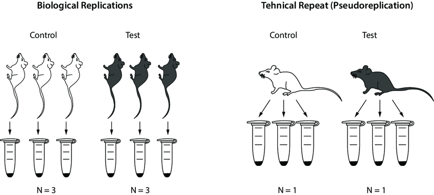
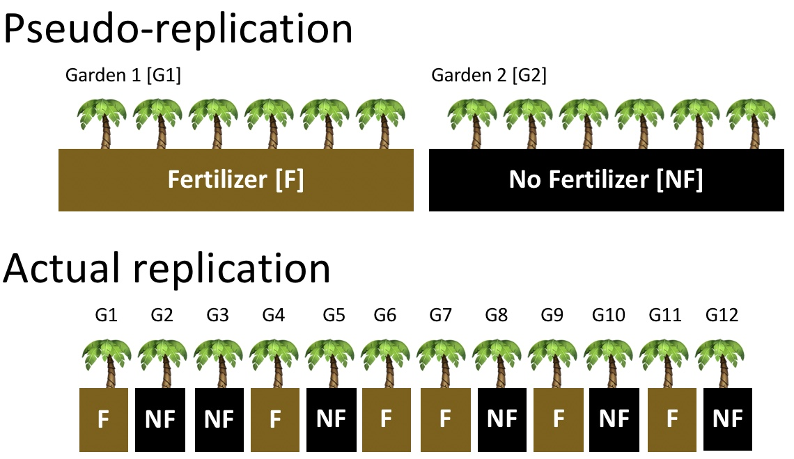

Replicación técnica: medidas repetidas de la misma unidad (20 hojas de 1 planta)
Regla práctica: Replicación = número de unidades independientes

Replicación verdadera vs pseudo replicación

Replicación verdadera vs pseudo replicación
Ejemplos
Medir 20 hojas de 1 planta → n = ?
Medir 1 hoja de cada una de 20 plantas → n = ?
Medir crecimiento de algas después de adición de nutrientes 5 días seguidos → n = ?
Contar líquenes en 4 lados de 1 árbol → n = ?
Tipos de Pseudoreplicación
Simple: 1 unidad experimental por tratamiento medida múltiples veces
Temporal: medidas repetidas en el tiempo usadas como réplicas
Evitando la Pseudoreplicación
Múltiples unidades independientes por tratamiento
Asignación aleatoria de tratamientos
Bloques para controlar la variación
Modelos jerárquicos / mixtos para datos anidados
Mensajes Clave
Replicación = unidades independientes, no medidas repetidas
La pseudoreplicación es común pero evitable
Reconocer cuando la replicación completa es imposible
Poder Estadístico: Introducción
Poder estadístico = probabilidad de detectar un efecto si verdaderamente existe
Poder = 1 – β
β (Error Tipo II): fallar en rechazar una hipótesis nula falsa
Meta común: 80% de poder
¡Ojo!
Alto poder = buena oportunidad de detectar efectos biológicamente significativos.
Por Qué Importa el Análisis de Poder
La ecología a menudo trata con alta variabilidad
Muy pocas réplicas → falsos negativos (perder efectos reales)
Demasiadas réplicas → tiempo, esfuerzo y recursos desperdiciados
El análisis de poder ayuda a equilibrar factibilidad y rigor científico
Componentes del Poder
El poder depende de:
Tamaño del efecto: qué tan grande es la diferencia verdadera
Tamaño de muestra (n): número de unidades independientes
Varianza (σ²): variabilidad natural en el sistema
Nivel de significancia (α): usualmente 0.05
Poder y Varianza: Cómo se Conectan
Recordar: El poder depende del tamaño del efecto, tamaño de muestra, varianza, y α
En la práctica, la varianza (σ²) está incorporada en el tamaño del efecto
Para una prueba t de dos muestras:
\[
d = \frac{\text{diferencia de medias}}{\text{desviación estándar}}
\]
Ejemplo Trabajado: De Varianza a Poder
Supongamos que probamos sombreado vs sin sombreado en el crecimiento de algas:
Diferencia de medias esperada = 20 unidades
Datos piloto: desviación estándar = 25
Nivel de significancia α = 0.05
Poder objetivo = 0.80
\[
d = \frac{20}{25} = 0.8
\]
Pregunta: ¿Cuántos arroyos réplica por tratamiento se necesitan?
Cálculo en R
library(pwr)# Tamaño del efecto a partir de diferencia de medias y DEd <-20/25# = 0.8# Análisis de poder para prueba t de dos muestraspwr.t.test(d = d, power =0.8, sig.level =0.05,type ="two.sample")
Two-sample t test power calculation
n = 25.52458
d = 0.8
sig.level = 0.05
power = 0.8
alternative = two.sided
NOTE: n is number in *each* group
Resultado: ~26 réplicas por grupo necesarias
Interpretación
Con σ = 25, detectar una diferencia de 20 unidades necesita ~26 réplicas por tratamiento.
Si la variabilidad fuera menor (σ = 10): d = 20/10 = 2 → muchas menos réplicas necesarias
Si la variabilidad fuera mayor (σ = 40): d = 20/40 = 0.5 → mucha más replicación necesaria
Mensajes Clave
Planificar el tamaño de muestra antes del experimento
¡La varianza importa! Dicta qué tan grande se ve el efecto relativo al ruido.
Siempre tratar de estimar la varianza de estudios piloto o la literatura.